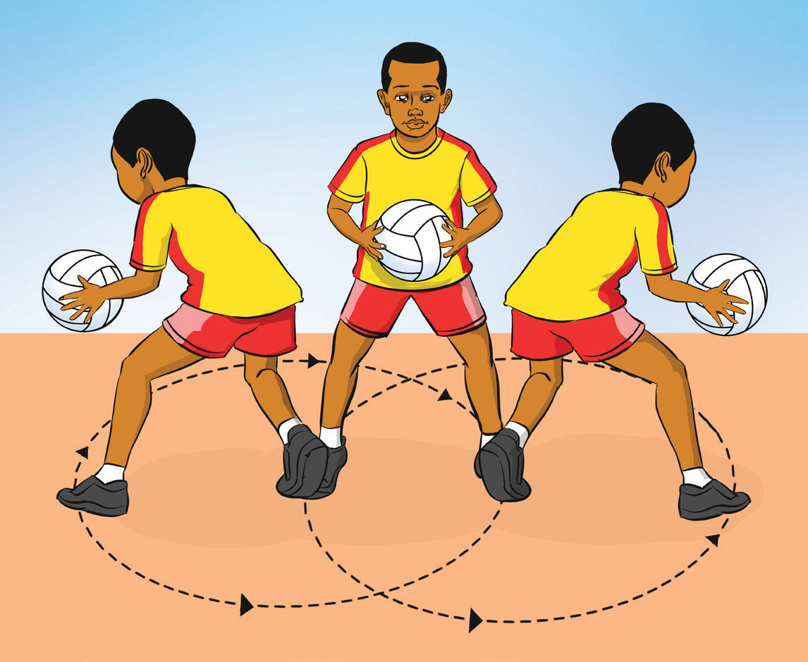

- (i) Receive the ball and come to a complete stop with one or two feet firmly planted on the ground;
- (ii) Choose your pivot foot (the foot that will remain stationary) and shift your weight onto it;
- (iii) Rotate on your pivot foot by turning your body in the direction you want to move, keeping the ball in control with your other hand;
- (iv) Keep your body low and balanced, bending your knees slightly to maintain stability during the pivot;
- (v) Use your free foot to step in the direction you want to go once you have pivoted, ensuring a smooth and controlled change of direction as shown in Figure 1.12; and
- (vi) Stay aware of your surroundings and prepare for the next pass or play after completing the pivot.

a
b
c
Figure 1.12: Pivot execution
Activity 1.8
Using various drills, practice pivoting repetitively to master the skill.
Dodging
Dodging is a quick lateral movement used to break free from defenders and create space for a pass or shot. It requires agility and quick decision-making to escape the